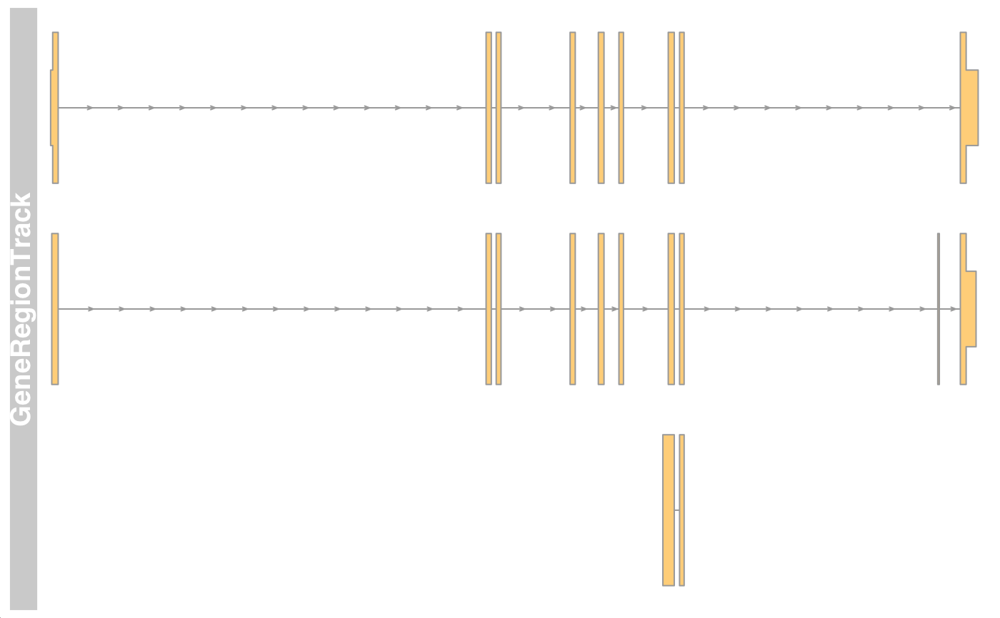
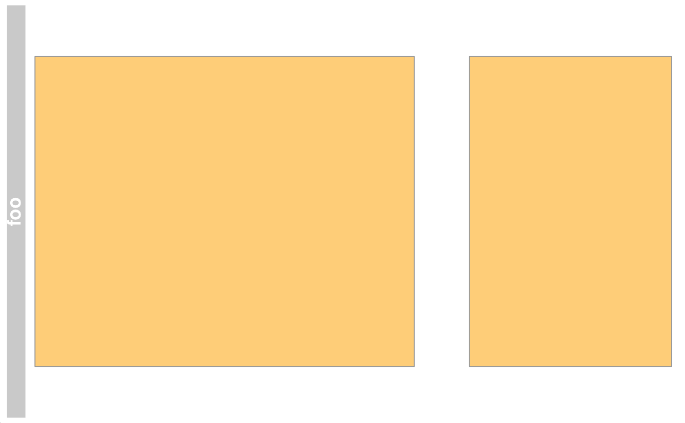
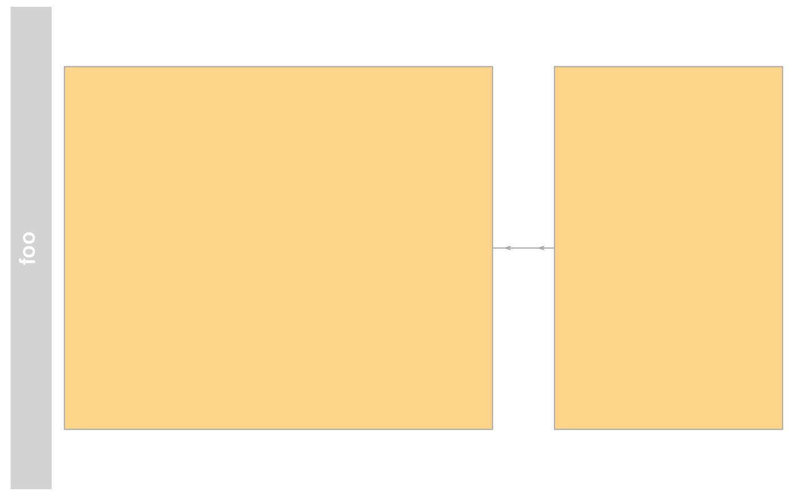
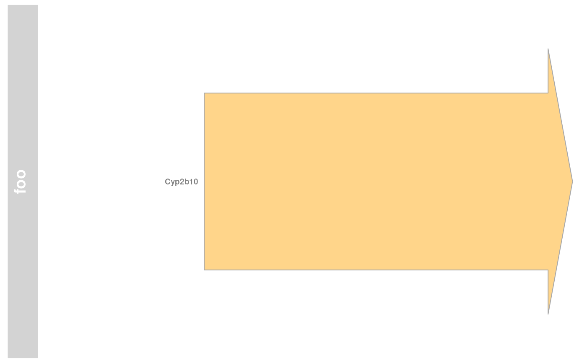
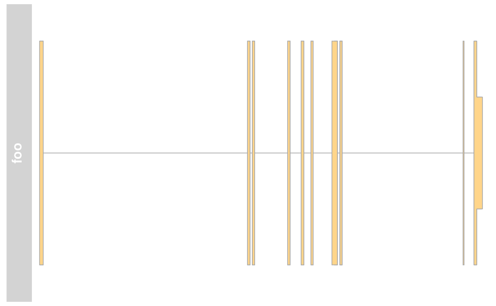
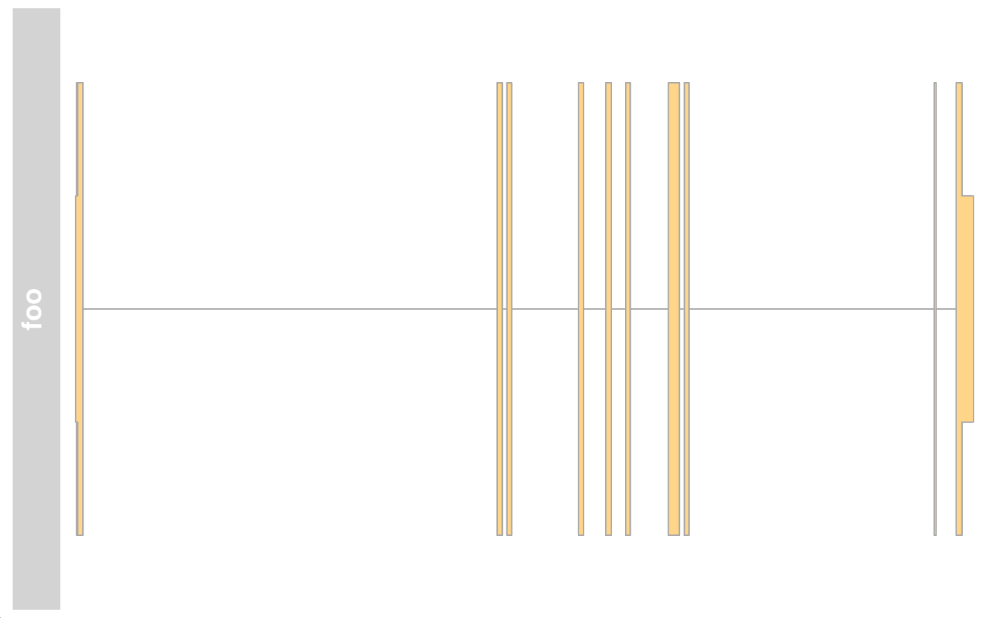

GeneRegionTrack class and methods
GeneRegionTrack-class.RdA class to hold gene model data for a genomic region.
GeneRegionTrack(range=NULL, rstarts=NULL, rends=NULL, rwidths=NULL, strand, feature, exon, transcript, gene, symbol, chromosome, genome, stacking="squish", name="GeneRegionTrack", start=NULL, end=NULL, importFunction, stream=FALSE, ...)
Arguments
| range |
An optional meta argument to handle the different input types. If
the The different input options for
|
|---|---|
| start, end | An integer scalar with the genomic start or end
coordinate for the gene model range. If those are missing, the
default value will automatically be the smallest (or largest) value,
respectively in |
| rstarts | An integer vector of the start coordinates for the
actual gene model items, i.e., for the individual exons. The
relationship between exons is handled via the |
| rends | An integer vector of the end coordinates for the actual
gene model items. Both |
| rwidths | An integer vector of widths for the actual gene model
items. This can be used instead of either |
| feature | Factor (or other vector that can be coerced into one),
giving the feature types for the individual track exons. When
plotting the track to the device, if a display parameter with the
same name as the value of |
| exon | Character vector of exon identifiers. It's values will be
used as the identifier tag when plotting to the device if the
display parameter |
| strand | Character vector, the strand information for the
individual track exons. It may be provided in the form |
| transcript | Factor (or other vector that can be coerced into
one), giving the transcript memberships for the individual track
exons. All items with the same transcript identifier will be
visually connected when plotting to the device. See
|
| gene | Factor (or other vector that can be coerced into one), giving the gene memberships for the individual track exons. |
| symbol | A factor with human-readable gene name aliases which
will be used as labels when |
| chromosome | The chromosome on which the track's genomic ranges
are defined. A valid UCSC chromosome identifier if
|
| genome | The genome on which the track's ranges are
defined. Usually this is a valid UCSC genome identifier, however
this is not being formally checked at this point. If not provided
here the constructor will try to extract this information from the
provided inputs, and eventually will fall back to the default value
of |
| stacking | The stacking type for overlapping items of the
track. One in |
| name | Character scalar of the track's name used in the title panel when plotting. |
| importFunction | A user-defined function to be used to import the
data from a file. This only applies when the |
| stream | A logical flag indicating that the user-provided import
function can deal with indexed files and knows how to process the
additional |
| ... | Additional items which will all be interpreted as further
display parameters. See |
Objects from the class
Objects can be created using the constructor function
GeneRegionTrack.
Details
A track containing all gene models in a particular region. The data
are usually fetched dynamially from an online data store, but it is
also possible to manully construct objects from local
data. Connections to particular online data sources should be
implemented as sub-classes, and GeneRegionTrack is just the
commone denominator that is being used for plotting later on. There
are several levels of data associated to a GeneRegionTrack:
- exon level:
identifiers are stored in the exon column of the
GRangesobject in therangeslot. Data may be extracted using theexonmethod.- transcript level:
identifiers are stored in the transcript column of the
GRangesobject. Data may be extracted using thetranscriptmethod.- gene level:
identifiers are stored in the gene column of the
GRangesobject, more human-readable versions in the symbol column. Data may be extracted using thegeneor thesymbolmethods.- transcript-type level:
information is stored in the feature column of the
GRangesobject. If a display parameter of the same name is specified, the software will use its value for the coloring.
GeneRegionTrack objects also know about coding regions and
non-coding regions (e.g., UTRs) in a transcript, and will indicate
those by using different shapes (wide boxes for all coding regions,
thinner boxes for non-coding regions). This is archived by setting the
feature values of the object for non-coding elements to one of
the options that are provided in the thinBoxFeature display
parameters. All other elements are considered to be coding elements.
Value
The return value of the constructor function is a new object of class
GeneRegionTrack.
Slots
start:Object of class
"numeric", the start coordinates of the annotation range. The coorrdinates for the individual gene model items are stored in therangeslot.end:Object of class
"numeric", the end coordinates of the annotation range. The corrdinates for the individual gene model items are stored in therangeslot.stacking:Object of class
"character", inherited from classStackedTrackstacks:Object of class
"numeric", inherited from classStackedTrackrange:Object of class
GRanges, inherited from classRangeTrackchromosome:Object of class
"character", inherited from classRangeTrackgenome:Object of class
"character", inherited from classRangeTrackdp:Object of class
DisplayPars, inherited from classGdObjectname:Object of class
"character", inherited from classGdObjectimageMap:
Extends
Class "AnnotationTrack", directly.
Class "StackedTrack", by class "AnnotationTrack",
distance2.
Class "RangeTrack", by class "AnnotationTrack",
distance3.
Class "GdObject", by class "AnnotationTrack",
distance4.
Methods
In the following code chunks, obj is considered to be an object of class GeneRegionTrack.
Exported in the name space:
- group
signature(gdObject="GeneRegionTrack"): extract the group membership for all track items. Usage:group(GdObject)Examples:- group<-
signature(gdObject="GeneRegionTrack", value="character"): replace the grouping information for track items. The replacement value must be a factor of appropriate length or another vector that can be coerced into such. Usage:group<-(GdObject, value)Examples:group(obj) <- c("a", "a", "b", "c", "a")
- identifier
signature(gdObject="GeneRegionTrack"): return track item identifiers. Depending on the setting of the optional argumentlowest, these are either the group identifiers or the individual item identifiers. Usage:identifier(GdObject, lowest=FALSE)Additional Arguments:lowest: return the lowest-level identifier, i.e., the item IDs, or the higher level group IDs which do not have to be unqiue.
- identifier<-
signature(gdObject="GeneRegionTrack", value="character"): Set the track item identifiers. The replacement value has to be a character vector of appropriate length. This always replaces the group-level identifiers, so essentially it is similar togroups<-. Usage:identifier<-(GdObject, value)Examples:identifier(obj) <- c("foo", "bar")
- exon
signature(GdObject="GeneRegionTrack"): Extract the exon identifiers for all exons in the gene models. Usage:exon(GdObject)Examples:exon(obj)
- exon<-
signature(GdObject="GeneRegionTrack", value="character"): replace the exon identifiers for all exons in the gene model. The replacement value must be a character of appropriate length or another vector that can be coerced into such. Usage:exon<-(GdObject, value)Examples:exon(obj) <- paste("Exon", 1:5)
- gene
signature(GdObject="GeneRegionTrack"): Extract the gene identifiers for all gene models. Usage:gene(GdObject)Examples:gene(obj)
- gene<-
signature(GdObject="GeneRegionTrack", value="character"): replace the gene identifiers for all gene models. The replacement value must be a character of appropriate length or another vector that can be coerced into such. Usage:gene<-(GdObject, value)Examples:gene(obj) <- paste("Gene", LETTERS[1:5])
- symbol
signature(GdObject="GeneRegionTrack"): Extract the human-readble gene symbol for all gene models. Usage:symbol(GdObject)Examples:symbol(obj)
- symbol<-
signature(GdObject="GeneRegionTrack", value="character"): replace the human-readable gene symbol for all gene models. The replacement value must be a character of appropriate length or another vector that can be coerced into such. Usage:gene<-(GdObject, value)Examples:symbol(obj) <- letters[1:5]
- transcript
signature(GdObject="GeneRegionTrack"): Extract the transcript identifiers for all transcripts in the gene models. Usage:transcript(GdObject)Examples:transcript(obj)
- transcript<-
signature(GdObject="GeneRegionTrack", value="character"): replace the transcript identifiers for all transcripts in the gene model. The replacement value must be a character of appropriate length or another vector that can be coerced into such. Usage:transcript<-(GdObject, value)Examples:transcript(obj) <- paste("Exon", 1:5)
Internal methods:
- coerce
signature(from="GeneRegionTrack", to="UCSCData"): coerce to aUCSCDataobject for export to the UCSC genome browser. Examples:as(obj, "UCSCData")
- collapseTrack
signature(GdObject="GeneRegionTrack"): preprocess the track before plotting. This will collapse overlapping track items based on the available resolution and increase the width and height of all track objects to a minimum value to avoid rendering issues. Seecollapsingfor details. Usage:collapseTrack(GdObject, diff=.pxResolution(coord="x"))Additional Arguments:diff: the minimum pixel width to display, everything below that will be inflated to a width ofdiff.
Gviz:::collapseTrack(obj)
- initialize
signature(.Object="GeneRegionTrack"): initialize the object- show
signature(object="GeneRegionTrack"): show a human-readable summary of the object
Inherited methods:
- drawGD
signature(GdObject="GeneRegionTrack"): plot the object to a graphics device. The return value of this method is the input object, potentially updated during the plotting operation. Internally, there are two modes in which the method can be called. Either in 'prepare' mode, in which case no plotting is done but the object is preprocessed based on the available space, or in 'plotting' mode, in which case the actual graphical output is created. Since subsetting of the object can be potentially costly, this can be switched off in case subsetting has already been performed before or is not necessary. Usage:drawGD(GdObject, minBase, maxBase, prepare=FALSE, subset=TRUE, ...)Additional Arguments:minBase,maxBase: the coordinate range to plot.prepare: run method in preparation or in production mode.subset: subset the object to the visible region or skip the potentially expensive subsetting operation....: all further arguments are ignored.
Gviz:::drawGD(obj)Gviz:::drawGD(obj, minBase=1, maxBase=100)Gviz:::drawGD(obj, prepare=TRUE, subset=FALSE)
- drawGrid
signature(GdObject="GeneRegionTrack"): superpose a grid on top of a track. Usage:drawGrid(GdObject, from, to)Additional Arguments:from,to: integer scalars, draw grid within a certain coordinates range. This needs to be supplied for the plotting function to know the current genomic coordinates.
Gviz:::drawGrid(obj, from=10, to=100)
- setStacks
signature(GdObject="GeneRegionTrack"): recompute the stacks based on the available space and on the object's track items and stacking settings. Usage:setStacks(GdObject, from, to)Additional Arguments:from,to: integer scalars, compute stacking within a certain coordinates range. This needs to be supplied for the plotting function to know the current genomic coordinates.
Gviz:::setStacks(obj, from=1, to=100)
- stacking
signature(GdObject="GeneRegionTrack"): return the current stacking type. Usage:stacking(GdObject)Examples:- stacking<-
signature(GdObject="GeneRegionTrack", value="character"): set the object's stacking type to one inc(hide, dense, squish, pack,full). Usage:stacking<-(GdObject, value)Additional Arguments:value: replacement value.
stacking(obj) <- "squish"
- stacks
signature(GdObject="GeneRegionTrack"): return the stack indices for each track item. Usage:stacks(GdObject)Examples:Gviz:::stacks(obj)
- [
signature(x="GeneRegionTrack", i="ANY", j="ANY", drop="ANY"): subset the items in theGeneRegionTrackobject. This is essentially similar to subsetting of theGRangesobject in therangeslot. For most applications, thesubsetmethod may be more appropriate. Additional Arguments:i,j: subsetting indices,jis ignored.drop: argument is ignored.
obj[1:5]
- chromosome
signature(GdObject="GeneRegionTrack"): return the currently active chromosome for which the track is defined. For consistancy with other Bioconductor packages, theisActiveSeqalias is also provided. Usage:chromosome(GdObject)Examples:- chromosome<-
signature(GdObject="GeneRegionTrack"): replace the value of the track's active chromosome. This has to be a valid UCSC chromosome identifier or an integer or character scalar that can be reasonably coerced into one, unlessoptions(ucscChromosomeNames=FALSE). For consistancy with other Bioconductor packages, theisActiveSeq<-alias is also provided. Usage:chromosome<-(GdObject, value)Additional Arguments:value: replacement value.
chromosome(obj) <- "chr12"
- start, end, width
signature(x="GeneRegionTrack"): the start or end coordinates of the track items, or their width in genomic coordinates. Usage:start(x)end(x)width(x)Examples:width(obj)
- start<-, end<-, width<-
signature(x="GeneRegionTrack"): replace the start or end coordinates of the track items, or their width. Usage:start<-(x, value)end<-(x, value)width<-(x, value)Additional Arguments:value: replacement value.
start(obj) <- 1:10end(obj) <- 20:30width(obj) <- 1
- position
signature(GdObject="GeneRegionTrack"): the arithmetic mean of the track item's coordionates, i.e.,(end(obj)-start(obj))/2. Usage:position(GdObject)Examples:- feature
signature(GdObject="GeneRegionTrack"): return the grouping information for track items. For certain sub-classes, groups may be indicated by different color schemes when plotting. Seegroupingfor details. Usage:feature(GdObject)Examples:- feature<-
signature(gdObject="GeneRegionTrack", value="character"): set the grouping information for track items. This has to be a factor vector (or another type of vector that can be coerced into one) of the same length as the number of items in theGeneRegionTrack. Seegroupingfor details. Usage:feature<-(GdObject, value)Additional Arguments:value: replacement value.
feature(obj) <- c("a", "a", "b", "c", "a")
- genome
signature(x="GeneRegionTrack"): return the track's genome. Usage:genome(x)Examples:genome(obj)
- genome<-
signature(x="GeneRegionTrack"): set the track's genome. Usually this has to be a valid UCSC identifier, however this is not formally enforced here. Usage:genome<-(x, value)Additional Arguments:value: replacement value.
genome(obj) <- "mm9"
- length
signature(x="GeneRegionTrack"): return the number of items in the track. Usage:length(x)Examples:- range
signature(x="GeneRegionTrack"): return the genomic coordinates for the track as an object of classIRanges. Usage:range(x)Examples:- ranges
signature(x="GeneRegionTrack"): return the genomic coordinates for the track along with all additional annotation information as an object of classGRanges. Usage:ranges(x)Examples:ranges(obj)
- split
signature(x="GeneRegionTrack"): split aGeneRegionTrackobject by an appropriate factor vector (or another vector that can be coerced into one). The output of this operation is a list of objects of the same class as the input object, all inheriting from classGeneRegionTrack. Usage:split(x, f, ...)Additional Arguments:f: the splitting factor....: all further arguments are ignored.
- strand
signature(x="GeneRegionTrack"): return a vector of strand specifiers for all track items, in the form '+' for the Watson strand, '-' for the Crick strand or '*' for either of the two. Usage:strand(x)Examples:strand(obj)
- strand<-
signature(x="GeneRegionTrack"): replace the strand information for the track items. The replacement value needs to be an appropriate scalar or vector of strand values. Usage:strand<-(x, value)Additional Arguments:value: replacement value.
strand(obj) <- "+"
- values
signature(x="GeneRegionTrack"): return all additional annotation information except for the genomic coordinates for the track items as a data.frame. Usage:values(x)Examples:values(obj)
- coerce
signature(from="GeneRegionTrack", to="data.frame"): coerce theGRangesobject in therangeslot into a regular data.frame. Examples:as(obj, "data.frame")
- subset
signature(x="GeneRegionTrack"): subset aGeneRegionTrackby coordinates and sort if necessary. Usage:subset(x, from, to, sort=FALSE, ...)Additional Arguments:from,to: the coordinates range to subset to.sort: sort the object after subsetting. Usually not necessary....: additional arguments are ignored.
- displayPars
signature(x="GeneRegionTrack", name="character"): list the value of the display parametername. Seesettingsfor details on display parameters and customization. Usage:displayPars(x, name)Examples:- displayPars
signature(x="GeneRegionTrack", name="missing"): list the value of all available display parameters. Seesettingsfor details on display parameters and customization. Examples:- getPar
signature(x="GeneRegionTrack", name="character"): alias for thedisplayParsmethod. Seesettingsfor details on display parameters and customization. Usage:getPar(x, name)Examples:- getPar
signature(x="GeneRegionTrack", name="missing"): alias for thedisplayParsmethod. Seesettingsfor details on display parameters and customization. Examples:- displayPars<-
signature(x="GeneRegionTrack", value="list"): set display parameters using the values of the named list invalue. Seesettingsfor details on display parameters and customization. Usage:displayPars<-(x, value)Examples:displayPars(obj) <- list(col="red", lwd=2)
- setPar
signature(x="GeneRegionTrack", value="character"): set the single display parameternametovalue. Note that display parameters in theGeneRegionTrackclass are pass-by-reference, so no re-assignmnet to the symbolobjis necessary. Seesettingsfor details on display parameters and customization. Usage:setPar(x, name, value)Additional Arguments:name: the name of the display parameter to set.
- setPar
signature(x="GeneRegionTrack", value="list"): set display parameters by the values of the named list invalue. Note that display parameters in theGeneRegionTrackclass are pass-by-reference, so no re-assignmnet to the symbolobjis necessary. Seesettingsfor details on display parameters and customization. Examples:- names
signature(x="GeneRegionTrack"): return the value of thenameslot. Usage:names(x)Examples:- names<-
signature(x="GeneRegionTrack", value="character"): set the value of thenameslot. Usage:names<-(x, value)Examples:names(obj) <- "foo"
- coords
signature(ImageMap="GeneRegionTrack"): return the coordinates from the internal image map. Usage:coords(ImageMap)Examples:- tags
signature(x="GeneRegionTrack"): return the tags from the internal image map. Usage:tags(x)Examples:
Display Parameters
The following display parameters are set for objects of class
GeneRegionTrack upon instantiation, unless one or more of them
have already been set by one of the optional sub-class initializers,
which always get precedence over these global defaults. See
settings for details on setting graphical parameters
for tracks.
arrowHeadMaxWidth=20: Numeric scalar. The maximum width of the arrow head in pixels ifshapeisarrow.arrowHeadWidth=10: Numeric scalar. The width of the arrow head in pixels ifshapeisfixedArrow.col=NULL: Character or integer scalar. The border color for all track items. Defaults to using the same color as infill, also taking into account different trackfeatures.collapseTranscripts=FALSE: Logical or character scalar. Can be one ingene,longest,shortestormeta. Merge all transcripts of the same gene into one single gene model. In the case ofgene(orTRUE), this will only keep the start location of the first exon and the end location of the last exon from all transcripts of the gene. Forshortestandlongest, only the longest or shortest transcript model is retained. Formeta, a meta-transcript containing the union of all exons is formed (essentially identical to the operationreduce(geneModel)).exonAnnotation=NULL: Character scalar. Add annotation information to the individual exon models. This can be a value insymbol,gene,transcript,exonorfeature. Defaults toexon. Only works ifshowExonIdis notFALSE.fill="orange": Character or integer scalar. The fill color for untyped items. This is also used to connect grouped items. Seegroupingfor details.min.distance=0: Numeric scalar. The minimum pixel distance before collapsing range items, only ifcollapse==TRUE. Seecollapsingfor details. Note that a value larger than 0 may lead to UTR regions being merged to CDS regions, which in most cases is not particularly useful.shape=c("smallArrow", "box"): Character scalar. The shape in which to display the track items. Currently onlybox,arrow,ellipse, andsmallArroware implemented.showExonId=NULL: Logical scalar. Control whether to plot the individual exon identifiers.thinBoxFeature=c("utr", "ncRNA", "utr3", "utr5", "3UTR", "5UTR", "miRNA", "lincRNA", "three_prime_UTR", "five_prime_UTR"): Character vector. A listing of feature types that should be drawn with thin boxes. Typically those are non-coding elements.transcriptAnnotation=NULL(Aliases: transcriptAnnotation): Character scalar. Add annotation information as transcript labels. This can be a value insymbol,gene,transcript,exonorfeature. Defaults tosymbol. Only works ifshowIdis notFALSE.
Additional display parameters are being inherited from the respective
parent classes. Note that not all of them may have an effect on the
plotting of GeneRegionTrack objects.
cex=1: Numeric scalar. The font expansion factor for item identifiers.cex.group=0.6: Numeric scalar. The font expansion factor for the group-level annotation.col.line="darkgray": Character scalar. The color used for connecting lines between grouped items. Defaults to a light gray, but if set toNULLthe same color as for the first item in the group is used.featureAnnotation=NULL: Character scalar. Add annotation information to the individual track elements. This can be a value inid,grouporfeature. Defaults toid. Only works ifshowFeatureIdis notFALSE.fontcolor.group="#808080"(Aliases: fontcolor.group): Character or integer scalar. The font color for the group-level annotation.fontcolor.item="white"(Aliases: fontcolor.item): Character or integer scalar. The font color for item identifiers.fontface.group=2: Numeric scalar. The font face for the group-level annotation.fontfamily.group="sans": Character scalar. The font family for the group-level annotation.fontsize.group=12: Numeric scalar. The font size for the group-level annotation.groupAnnotation=NULL: Character scalar. Add annotation information as group labels. This can be a value inid,grouporfeature. Defaults togroup. Only works ifshowIdis notFALSE.just.group="left"(Aliases: just.group): Character scalar. the justification of group labels. Eitherleft,right,aboveorbelow.lex=1: Numeric scalar. The line expansion factor for all track items. This is also used to connect grouped items. Seegroupingfor details.lineheight=1: Numeric scalar. The font line height for item identifiers.lty="solid": Character or integer scalar. The line type for all track items. This is also used to connect grouped items. Seegroupingfor details.lwd=1: Integer scalar. The line width for all track items. This is also used to connect grouped items. Seegroupingfor details.mergeGroups=FALSE: Logical scalar. Merge fully overlapping groups ifcollapse==TRUE.min.height=3: Numeric scalar. The minimum range height in pixels to display. All ranges are expanded to this size in order to avoid rendering issues. Seecollapsingfor details. For feathered bars indicating the strandedness of grouped items this also controls the height of the arrow feathers.min.width=1: Numeric scalar. The minimum range width in pixels to display. All ranges are expanded to this size in order to avoid rendering issues. Seecollapsingfor details.rotation=0: Numeric scalar. The degree of text rotation for item identifiers.rotation.group=0: Numeric scalar. The degree of text rotation for group labels.rotation.item=0: Numeric scalar. The degree of text rotation for item identifiers.showFeatureId=FALSE: Logical scalar. Control whether to plot the individual track item identifiers.showId=FALSE: Logical scalar. Control whether to annotate individual groups.showOverplotting=FALSE: Logical scalar. Use a color gradient to show the amount of overplotting for collapsed items. This implies thatcollapse==TRUEsize=1: Numeric scalar. The relative size of the track. Can be overridden in theplotTracksfunction.
reverseStacking=FALSE: Logical flag. Reverse the y-ordering of stacked items. I.e., features that are plotted on the bottom-most stacks will be moved to the top-most stack and vice versa.stackHeight=0.75: Numeric between 0 and 1. Controls the vertical size and spacing between stacked elements. The number defines the proportion of the total available space for the stack that is used to draw the glyphs. E.g., a value of 0.5 means that half of the available vertical drawing space (for each stacking line) is used for the glyphs, and thus one quarter of the available space each is used for spacing above and below the glyph. Defaults to 0.75.
alpha=1: Numeric scalar. The transparency for all track items.alpha.title=NULL: Numeric scalar. The transparency for the title panel.background.legend="transparent": Integer or character scalar. The background color for the legend.background.panel="transparent": Integer or character scalar. The background color of the content panel.background.title="lightgray": Integer or character scalar. The background color for the title panel.cex.axis=NULL: Numeric scalar. The expansion factor for the axis annotation. Defaults toNULL, in which case it is automatically determined based on the available space.cex.title=NULL: Numeric scalar. The expansion factor for the title panel. This effects the fontsize of both the title and the axis, if any. Defaults toNULL, which means that the text size is automatically adjusted to the available space.col.axis="white": Integer or character scalar. The font and line color for the y axis, if any.col.border.title="white": Integer or character scalar. The border color for the title panels.col.frame="lightgray": Integer or character scalar. The line color used for the panel frame, ifframe==TRUEcol.grid="#808080": Integer or character scalar. Default line color for grid lines, both whentype=="g"inDataTracks and when display parametergrid==TRUE.col.symbol=NULL: Integer or character scalar. Default colors for plot symbols. Usually the same as the globalcolparameter.col.title="white"(Aliases: fontcolor.title): Integer or character scalar. The border color for the title panelscollapse=TRUE: Boolean controlling whether to collapse the content of the track to accomodate the minimum current device resolution. Seecollapsingfor details.fontcolor="black": Integer or character scalar. The font color for all text, unless a more specific definition exists.fontface=1: Integer or character scalar. The font face for all text, unless a more specific definition exists.fontface.title=2: Integer or character scalar. The font face for the title panels.fontfamily="sans": Integer or character scalar. The font family for all text, unless a more specific definition exists.fontfamily.title="sans": Integer or character scalar. The font family for the title panels.fontsize=12: Numeric scalar. The font size for all text, unless a more specific definition exists.frame=FALSE: Boolean. Draw a frame around the track when plotting.grid=FALSE: Boolean, switching on/off the plotting of a grid.h=-1: Integer scalar. Parameter controlling the number of horizontal grid lines, seepanel.gridfor details.lty.grid="solid": Integer or character scalar. Default line type for grid lines, both whentype=="g"inDataTracks and when display parametergrid==TRUE.lwd.border.title=1: Integer scalar. The border width for the title panels.lwd.grid=1: Numeric scalar. Default line width for grid lines, both whentype=="g"inDataTracks and when display parametergrid==TRUE.lwd.title=1: Integer scalar. The border width for the title panelsreverseStrand=FALSE: Logical scalar. Set up the plotting coordinates in 3' -> 5' direction ifTRUE. This will effectively mirror the plot on the vertical axis.rotation.title=90(Aliases: rotation.title): The rotation angle for the text in the title panel. Even though this can be adjusted, the automatic resizing of the title panel will currently not work, so use at own risk.showAxis=TRUE: Boolean controlling whether to plot a y axis (only applies to track types where axes are implemented).showTitle=TRUE: Boolean controlling whether to plot a title panel. Although this can be set individually for each track, in multi-track plots as created byplotTracksthere will still be an empty placeholder in case any of the other tracks include a title. The same holds true for axes. Note that the the title panel background color could be set to transparent in order to completely hide it.v=-1: Integer scalar. Parameter controlling the number of vertical grid lines, seepanel.gridfor details.
Author
Florian Hahne, Steve Lianoglou
See also
IRanges
Examples
## The empty object GeneRegionTrack()#> GeneRegionTrack 'GeneRegionTrack' #> | genome: NA #> | active chromosome: chrNA #> | annotation features: 0## Load some sample data data(cyp2b10) ## Construct the object grTrack <- GeneRegionTrack(start=26682683, end=26711643, rstart=cyp2b10$start, rends=cyp2b10$end, chromosome=7, genome="mm9", transcript=cyp2b10$transcript, gene=cyp2b10$gene, symbol=cyp2b10$symbol, feature=cyp2b10$feature, exon=cyp2b10$exon, name="Cyp2b10", strand=cyp2b10$strand) ## Directly from the data.frame grTrack <- GeneRegionTrack(cyp2b10) ## From a TxDb object if(require(GenomicFeatures)){ samplefile <- system.file("extdata", "hg19_knownGene_sample.sqlite", package="GenomicFeatures") txdb <- loadDb(samplefile) GeneRegionTrack(txdb) GeneRegionTrack(txdb, chromosome="chr6", start=35000000, end=40000000) }#>#>#>#> #> #> #> #>#> GeneRegionTrack 'GeneRegionTrack' #> | genome: hg19 #> | active chromosome: chr6 #> | annotation features: 71# \dontshow{ ## For some annoying reason the postscript device does not know about ## the sans font if(!interactive()) { font <- ps.options()$family displayPars(grTrack) <- list(fontfamily=font, fontfamily.title=font) } # } ## Plotting plotTracks(grTrack)#> [1] "GeneRegionTrack"## Subsetting and splitting subTrack <- subset(grTrack, from=26700000, to=26705000) length(subTrack)#> [1] 0#> $ENSMUST00000005477 #> GeneRegionTrack 'foo' #> | genome: NA #> | active chromosome: chr7 #> | annotation features: 12 #> #> $ENSMUST00000072438 #> GeneRegionTrack 'foo' #> | genome: NA #> | active chromosome: chr7 #> | annotation features: 11 #> #> $ENSMUST00000144140 #> GeneRegionTrack 'foo' #> | genome: NA #> | active chromosome: chr7 #> | annotation features: 2 #>#> [1] 25897620 25897676 25897685 25897685 25911238 25911238 25911554 25911554 #> [9] 25913865 25913865 25914748 25914748 25915392 25915392 25916766 25916934 #> [17] 25916934 25917288 25917288 25917288 25925373 25926068 25926068 25926250 #> [25] 25926250#> [1] 25897684 25897684 25897855 25897855 25911400 25911400 25911703 25911703 #> [9] 25914025 25914025 25914924 25914924 25915533 25915533 25917121 25917121 #> [17] 25917121 25917429 25917429 25917430 25925399 25926249 25926249 25926559 #> [25] 25926624width(grTrack)#> [1] 65 9 171 171 163 163 150 150 161 161 177 177 142 142 356 188 188 142 142 #> [20] 143 27 182 182 310 375#> [1] 25897652 25897680 25897770 25897770 25911319 25911319 25911628 25911628 #> [9] 25913945 25913945 25914836 25914836 25915462 25915462 25916944 25917028 #> [17] 25917028 25917358 25917358 25917359 25925386 25926158 25926158 25926404 #> [25] 25926437width(subTrack) <- width(subTrack)+100 strand(grTrack)#> [1] "+" "+" "+" "+" "+" "+" "+" "+" "+" "+" "+" "+" "+" "+" "+" "+" "+" "+" "+" #> [20] "+" "+" "+" "+" "+" "+"#> [1] "chr7"#> [1] NA#> IRanges object with 25 ranges and 0 metadata columns: #> start end width #> <integer> <integer> <integer> #> [1] 25897620 25897684 65 #> [2] 25897676 25897684 9 #> [3] 25897685 25897855 171 #> [4] 25897685 25897855 171 #> [5] 25911238 25911400 163 #> ... ... ... ... #> [21] 25925373 25925399 27 #> [22] 25926068 25926249 182 #> [23] 25926068 25926249 182 #> [24] 25926250 25926559 310 #> [25] 25926250 25926624 375ranges(grTrack)#> GRanges object with 25 ranges and 7 metadata columns: #> seqnames ranges strand | feature id #> <Rle> <IRanges> <Rle> | <factor> <character> #> [1] chr7 25897620-25897684 + | utr5 unknown #> [2] chr7 25897676-25897684 + | utr5 unknown #> [3] chr7 25897685-25897855 + | protein_coding unknown #> [4] chr7 25897685-25897855 + | protein_coding unknown #> [5] chr7 25911238-25911400 + | protein_coding unknown #> ... ... ... ... . ... ... #> [21] chr7 25925373-25925399 + | protein_coding unknown #> [22] chr7 25926068-25926249 + | protein_coding unknown #> [23] chr7 25926068-25926249 + | protein_coding unknown #> [24] chr7 25926250-25926559 + | utr3 unknown #> [25] chr7 25926250-25926624 + | utr3 unknown #> exon transcript gene symbol #> <factor> <factor> <factor> <factor> #> [1] ENSMUSE00000742021 ENSMUST00000072438 ENSMUSG00000030483 Cyp2b10 #> [2] ENSMUSE00000489385 ENSMUST00000005477 ENSMUSG00000030483 Cyp2b10 #> [3] ENSMUSE00000742021 ENSMUST00000072438 ENSMUSG00000030483 Cyp2b10 #> [4] ENSMUSE00000489385 ENSMUST00000005477 ENSMUSG00000030483 Cyp2b10 #> [5] ENSMUSE00000973560 ENSMUST00000072438 ENSMUSG00000030483 Cyp2b10 #> ... ... ... ... ... #> [21] ENSMUSE00000496705 ENSMUST00000005477 ENSMUSG00000030483 Cyp2b10 #> [22] ENSMUSE00000498616 ENSMUST00000072438 ENSMUSG00000030483 Cyp2b10 #> [23] ENSMUSE00000750625 ENSMUST00000005477 ENSMUSG00000030483 Cyp2b10 #> [24] ENSMUSE00000750625 ENSMUST00000005477 ENSMUSG00000030483 Cyp2b10 #> [25] ENSMUSE00000498616 ENSMUST00000072438 ENSMUSG00000030483 Cyp2b10 #> density #> <numeric> #> [1] 1 #> [2] 1 #> [3] 1 #> [4] 1 #> [5] 1 #> ... ... #> [21] 1 #> [22] 1 #> [23] 1 #> [24] 1 #> [25] 1 #> ------- #> seqinfo: 1 sequence from an unspecified genome; no seqlengths#> [1] "Cyp2b10" "Cyp2b10" "Cyp2b10" "Cyp2b10" "Cyp2b10" "Cyp2b10" "Cyp2b10" #> [8] "Cyp2b10" "Cyp2b10" "Cyp2b10" "Cyp2b10" "Cyp2b10" "Cyp2b10" "Cyp2b10" #> [15] "Cyp2b10" "Cyp2b10" "Cyp2b10" "Cyp2b10" "Cyp2b10" "Cyp2b10" "Cyp2b10" #> [22] "Cyp2b10" "Cyp2b10" "Cyp2b10" "Cyp2b10"#> [1] "ENSMUSE00000742021" "ENSMUSE00000489385" "ENSMUSE00000742021" #> [4] "ENSMUSE00000489385" "ENSMUSE00000973560" "ENSMUSE00000973560" #> [7] "ENSMUSE00001043622" "ENSMUSE00001043622" "ENSMUSE00001013991" #> [10] "ENSMUSE00001013991" "ENSMUSE00000996531" "ENSMUSE00000996531" #> [13] "ENSMUSE00000999790" "ENSMUSE00000999790" "ENSMUSE00000736922" #> [16] "ENSMUSE00000963884" "ENSMUSE00000963884" "ENSMUSE00001063063" #> [19] "ENSMUSE00001063063" "ENSMUSE00000748299" "ENSMUSE00000496705" #> [22] "ENSMUSE00000498616" "ENSMUSE00000750625" "ENSMUSE00000750625" #> [25] "ENSMUSE00000498616"#> [1] "utr5" "utr5" "protein_coding" "protein_coding" #> [5] "protein_coding" "protein_coding" "protein_coding" "protein_coding" #> [9] "protein_coding" "protein_coding" "protein_coding" "protein_coding" #> [13] "protein_coding" "protein_coding" "protein_coding" "protein_coding" #> [17] "protein_coding" "protein_coding" "protein_coding" "protein_coding" #> [21] "protein_coding" "protein_coding" "protein_coding" "utr3" #> [25] "utr3"#> [1] "ENSMUSE00000742021" "ENSMUSE00000489385" "ENSMUSE00000742021" #> [4] "ENSMUSE00000489385" "ENSMUSE00000973560" "ENSMUSE00000973560" #> [7] "ENSMUSE00001043622" "ENSMUSE00001043622" "ENSMUSE00001013991" #> [10] "ENSMUSE00001013991" "ENSMUSE00000996531" "ENSMUSE00000996531" #> [13] "ENSMUSE00000999790" "ENSMUSE00000999790" "ENSMUSE00000736922" #> [16] "ENSMUSE00000963884" "ENSMUSE00000963884" "ENSMUSE00001063063" #> [19] "ENSMUSE00001063063" "ENSMUSE00000748299" "ENSMUSE00000496705" #> [22] "ENSMUSE00000498616" "ENSMUSE00000750625" "ENSMUSE00000750625" #> [25] "ENSMUSE00000498616"exon(subTrack) <- letters[1:2] gene(grTrack)#> [1] "ENSMUSG00000030483" "ENSMUSG00000030483" "ENSMUSG00000030483" #> [4] "ENSMUSG00000030483" "ENSMUSG00000030483" "ENSMUSG00000030483" #> [7] "ENSMUSG00000030483" "ENSMUSG00000030483" "ENSMUSG00000030483" #> [10] "ENSMUSG00000030483" "ENSMUSG00000030483" "ENSMUSG00000030483" #> [13] "ENSMUSG00000030483" "ENSMUSG00000030483" "ENSMUSG00000030483" #> [16] "ENSMUSG00000030483" "ENSMUSG00000030483" "ENSMUSG00000030483" #> [19] "ENSMUSG00000030483" "ENSMUSG00000030483" "ENSMUSG00000030483" #> [22] "ENSMUSG00000030483" "ENSMUSG00000030483" "ENSMUSG00000030483" #> [25] "ENSMUSG00000030483"gene(subTrack) <- "bar" symbol(grTrack)#> [1] "Cyp2b10" "Cyp2b10" "Cyp2b10" "Cyp2b10" "Cyp2b10" "Cyp2b10" "Cyp2b10" #> [8] "Cyp2b10" "Cyp2b10" "Cyp2b10" "Cyp2b10" "Cyp2b10" "Cyp2b10" "Cyp2b10" #> [15] "Cyp2b10" "Cyp2b10" "Cyp2b10" "Cyp2b10" "Cyp2b10" "Cyp2b10" "Cyp2b10" #> [22] "Cyp2b10" "Cyp2b10" "Cyp2b10" "Cyp2b10"symbol(subTrack) <- "foo" transcript(grTrack)#> [1] "ENSMUST00000072438" "ENSMUST00000005477" "ENSMUST00000072438" #> [4] "ENSMUST00000005477" "ENSMUST00000072438" "ENSMUST00000005477" #> [7] "ENSMUST00000072438" "ENSMUST00000005477" "ENSMUST00000072438" #> [10] "ENSMUST00000005477" "ENSMUST00000072438" "ENSMUST00000005477" #> [13] "ENSMUST00000072438" "ENSMUST00000005477" "ENSMUST00000144140" #> [16] "ENSMUST00000072438" "ENSMUST00000005477" "ENSMUST00000072438" #> [19] "ENSMUST00000005477" "ENSMUST00000144140" "ENSMUST00000005477" #> [22] "ENSMUST00000072438" "ENSMUST00000005477" "ENSMUST00000005477" #> [25] "ENSMUST00000072438"values(grTrack)#> feature id exon transcript #> 1 utr5 unknown ENSMUSE00000742021 ENSMUST00000072438 #> 2 utr5 unknown ENSMUSE00000489385 ENSMUST00000005477 #> 3 protein_coding unknown ENSMUSE00000742021 ENSMUST00000072438 #> 4 protein_coding unknown ENSMUSE00000489385 ENSMUST00000005477 #> 5 protein_coding unknown ENSMUSE00000973560 ENSMUST00000072438 #> 6 protein_coding unknown ENSMUSE00000973560 ENSMUST00000005477 #> 7 protein_coding unknown ENSMUSE00001043622 ENSMUST00000072438 #> 8 protein_coding unknown ENSMUSE00001043622 ENSMUST00000005477 #> 9 protein_coding unknown ENSMUSE00001013991 ENSMUST00000072438 #> 10 protein_coding unknown ENSMUSE00001013991 ENSMUST00000005477 #> 11 protein_coding unknown ENSMUSE00000996531 ENSMUST00000072438 #> 12 protein_coding unknown ENSMUSE00000996531 ENSMUST00000005477 #> 13 protein_coding unknown ENSMUSE00000999790 ENSMUST00000072438 #> 14 protein_coding unknown ENSMUSE00000999790 ENSMUST00000005477 #> 15 protein_coding unknown ENSMUSE00000736922 ENSMUST00000144140 #> 16 protein_coding unknown ENSMUSE00000963884 ENSMUST00000072438 #> 17 protein_coding unknown ENSMUSE00000963884 ENSMUST00000005477 #> 18 protein_coding unknown ENSMUSE00001063063 ENSMUST00000072438 #> 19 protein_coding unknown ENSMUSE00001063063 ENSMUST00000005477 #> 20 protein_coding unknown ENSMUSE00000748299 ENSMUST00000144140 #> 21 protein_coding unknown ENSMUSE00000496705 ENSMUST00000005477 #> 22 protein_coding unknown ENSMUSE00000498616 ENSMUST00000072438 #> 23 protein_coding unknown ENSMUSE00000750625 ENSMUST00000005477 #> 24 utr3 unknown ENSMUSE00000750625 ENSMUST00000005477 #> 25 utr3 unknown ENSMUSE00000498616 ENSMUST00000072438 #> gene symbol density #> 1 ENSMUSG00000030483 Cyp2b10 1 #> 2 ENSMUSG00000030483 Cyp2b10 1 #> 3 ENSMUSG00000030483 Cyp2b10 1 #> 4 ENSMUSG00000030483 Cyp2b10 1 #> 5 ENSMUSG00000030483 Cyp2b10 1 #> 6 ENSMUSG00000030483 Cyp2b10 1 #> 7 ENSMUSG00000030483 Cyp2b10 1 #> 8 ENSMUSG00000030483 Cyp2b10 1 #> 9 ENSMUSG00000030483 Cyp2b10 1 #> 10 ENSMUSG00000030483 Cyp2b10 1 #> 11 ENSMUSG00000030483 Cyp2b10 1 #> 12 ENSMUSG00000030483 Cyp2b10 1 #> 13 ENSMUSG00000030483 Cyp2b10 1 #> 14 ENSMUSG00000030483 Cyp2b10 1 #> 15 ENSMUSG00000030483 Cyp2b10 1 #> 16 ENSMUSG00000030483 Cyp2b10 1 #> 17 ENSMUSG00000030483 Cyp2b10 1 #> 18 ENSMUSG00000030483 Cyp2b10 1 #> 19 ENSMUSG00000030483 Cyp2b10 1 #> 20 ENSMUSG00000030483 Cyp2b10 1 #> 21 ENSMUSG00000030483 Cyp2b10 1 #> 22 ENSMUSG00000030483 Cyp2b10 1 #> 23 ENSMUSG00000030483 Cyp2b10 1 #> 24 ENSMUSG00000030483 Cyp2b10 1 #> 25 ENSMUSG00000030483 Cyp2b10 1#> [1] "ENSMUST00000072438" "ENSMUST00000005477" "ENSMUST00000072438" #> [4] "ENSMUST00000005477" "ENSMUST00000072438" "ENSMUST00000005477" #> [7] "ENSMUST00000072438" "ENSMUST00000005477" "ENSMUST00000072438" #> [10] "ENSMUST00000005477" "ENSMUST00000072438" "ENSMUST00000005477" #> [13] "ENSMUST00000072438" "ENSMUST00000005477" "ENSMUST00000144140" #> [16] "ENSMUST00000072438" "ENSMUST00000005477" "ENSMUST00000072438" #> [19] "ENSMUST00000005477" "ENSMUST00000144140" "ENSMUST00000005477" #> [22] "ENSMUST00000072438" "ENSMUST00000005477" "ENSMUST00000005477" #> [25] "ENSMUST00000072438"#> [1] "Group 1" "Group 1"## Collapsing transcripts plotTracks(grTrack, collapseTranscripts=TRUE, showId=TRUE, extend.left=10000, shape="arrow")#> [1] "squish"## coercion as(grTrack, "data.frame")#> X.seqnames X.start X.end X.width X.strand X.feature X.id #> 1 chr7 25897620 25897684 65 + utr5 unknown #> 2 chr7 25897676 25897684 9 + utr5 unknown #> 3 chr7 25897685 25897855 171 + protein_coding unknown #> 4 chr7 25897685 25897855 171 + protein_coding unknown #> 5 chr7 25911238 25911400 163 + protein_coding unknown #> 6 chr7 25911238 25911400 163 + protein_coding unknown #> 7 chr7 25911554 25911703 150 + protein_coding unknown #> 8 chr7 25911554 25911703 150 + protein_coding unknown #> 9 chr7 25913865 25914025 161 + protein_coding unknown #> 10 chr7 25913865 25914025 161 + protein_coding unknown #> 11 chr7 25914748 25914924 177 + protein_coding unknown #> 12 chr7 25914748 25914924 177 + protein_coding unknown #> 13 chr7 25915392 25915533 142 + protein_coding unknown #> 14 chr7 25915392 25915533 142 + protein_coding unknown #> 15 chr7 25916766 25917121 356 + protein_coding unknown #> 16 chr7 25916934 25917121 188 + protein_coding unknown #> 17 chr7 25916934 25917121 188 + protein_coding unknown #> 18 chr7 25917288 25917429 142 + protein_coding unknown #> 19 chr7 25917288 25917429 142 + protein_coding unknown #> 20 chr7 25917288 25917430 143 + protein_coding unknown #> 21 chr7 25925373 25925399 27 + protein_coding unknown #> 22 chr7 25926068 25926249 182 + protein_coding unknown #> 23 chr7 25926068 25926249 182 + protein_coding unknown #> 24 chr7 25926250 25926559 310 + utr3 unknown #> 25 chr7 25926250 25926624 375 + utr3 unknown #> X.exon X.transcript X.gene X.symbol X.density #> 1 ENSMUSE00000742021 ENSMUST00000072438 ENSMUSG00000030483 Cyp2b10 1 #> 2 ENSMUSE00000489385 ENSMUST00000005477 ENSMUSG00000030483 Cyp2b10 1 #> 3 ENSMUSE00000742021 ENSMUST00000072438 ENSMUSG00000030483 Cyp2b10 1 #> 4 ENSMUSE00000489385 ENSMUST00000005477 ENSMUSG00000030483 Cyp2b10 1 #> 5 ENSMUSE00000973560 ENSMUST00000072438 ENSMUSG00000030483 Cyp2b10 1 #> 6 ENSMUSE00000973560 ENSMUST00000005477 ENSMUSG00000030483 Cyp2b10 1 #> 7 ENSMUSE00001043622 ENSMUST00000072438 ENSMUSG00000030483 Cyp2b10 1 #> 8 ENSMUSE00001043622 ENSMUST00000005477 ENSMUSG00000030483 Cyp2b10 1 #> 9 ENSMUSE00001013991 ENSMUST00000072438 ENSMUSG00000030483 Cyp2b10 1 #> 10 ENSMUSE00001013991 ENSMUST00000005477 ENSMUSG00000030483 Cyp2b10 1 #> 11 ENSMUSE00000996531 ENSMUST00000072438 ENSMUSG00000030483 Cyp2b10 1 #> 12 ENSMUSE00000996531 ENSMUST00000005477 ENSMUSG00000030483 Cyp2b10 1 #> 13 ENSMUSE00000999790 ENSMUST00000072438 ENSMUSG00000030483 Cyp2b10 1 #> 14 ENSMUSE00000999790 ENSMUST00000005477 ENSMUSG00000030483 Cyp2b10 1 #> 15 ENSMUSE00000736922 ENSMUST00000144140 ENSMUSG00000030483 Cyp2b10 1 #> 16 ENSMUSE00000963884 ENSMUST00000072438 ENSMUSG00000030483 Cyp2b10 1 #> 17 ENSMUSE00000963884 ENSMUST00000005477 ENSMUSG00000030483 Cyp2b10 1 #> 18 ENSMUSE00001063063 ENSMUST00000072438 ENSMUSG00000030483 Cyp2b10 1 #> 19 ENSMUSE00001063063 ENSMUST00000005477 ENSMUSG00000030483 Cyp2b10 1 #> 20 ENSMUSE00000748299 ENSMUST00000144140 ENSMUSG00000030483 Cyp2b10 1 #> 21 ENSMUSE00000496705 ENSMUST00000005477 ENSMUSG00000030483 Cyp2b10 1 #> 22 ENSMUSE00000498616 ENSMUST00000072438 ENSMUSG00000030483 Cyp2b10 1 #> 23 ENSMUSE00000750625 ENSMUST00000005477 ENSMUSG00000030483 Cyp2b10 1 #> 24 ENSMUSE00000750625 ENSMUST00000005477 ENSMUSG00000030483 Cyp2b10 1 #> 25 ENSMUSE00000498616 ENSMUST00000072438 ENSMUSG00000030483 Cyp2b10 1 #> feature id exon transcript #> 1 utr5 unknown ENSMUSE00000742021 ENSMUST00000072438 #> 2 utr5 unknown ENSMUSE00000489385 ENSMUST00000005477 #> 3 protein_coding unknown ENSMUSE00000742021 ENSMUST00000072438 #> 4 protein_coding unknown ENSMUSE00000489385 ENSMUST00000005477 #> 5 protein_coding unknown ENSMUSE00000973560 ENSMUST00000072438 #> 6 protein_coding unknown ENSMUSE00000973560 ENSMUST00000005477 #> 7 protein_coding unknown ENSMUSE00001043622 ENSMUST00000072438 #> 8 protein_coding unknown ENSMUSE00001043622 ENSMUST00000005477 #> 9 protein_coding unknown ENSMUSE00001013991 ENSMUST00000072438 #> 10 protein_coding unknown ENSMUSE00001013991 ENSMUST00000005477 #> 11 protein_coding unknown ENSMUSE00000996531 ENSMUST00000072438 #> 12 protein_coding unknown ENSMUSE00000996531 ENSMUST00000005477 #> 13 protein_coding unknown ENSMUSE00000999790 ENSMUST00000072438 #> 14 protein_coding unknown ENSMUSE00000999790 ENSMUST00000005477 #> 15 protein_coding unknown ENSMUSE00000736922 ENSMUST00000144140 #> 16 protein_coding unknown ENSMUSE00000963884 ENSMUST00000072438 #> 17 protein_coding unknown ENSMUSE00000963884 ENSMUST00000005477 #> 18 protein_coding unknown ENSMUSE00001063063 ENSMUST00000072438 #> 19 protein_coding unknown ENSMUSE00001063063 ENSMUST00000005477 #> 20 protein_coding unknown ENSMUSE00000748299 ENSMUST00000144140 #> 21 protein_coding unknown ENSMUSE00000496705 ENSMUST00000005477 #> 22 protein_coding unknown ENSMUSE00000498616 ENSMUST00000072438 #> 23 protein_coding unknown ENSMUSE00000750625 ENSMUST00000005477 #> 24 utr3 unknown ENSMUSE00000750625 ENSMUST00000005477 #> 25 utr3 unknown ENSMUSE00000498616 ENSMUST00000072438 #> gene symbol density #> 1 ENSMUSG00000030483 Cyp2b10 1 #> 2 ENSMUSG00000030483 Cyp2b10 1 #> 3 ENSMUSG00000030483 Cyp2b10 1 #> 4 ENSMUSG00000030483 Cyp2b10 1 #> 5 ENSMUSG00000030483 Cyp2b10 1 #> 6 ENSMUSG00000030483 Cyp2b10 1 #> 7 ENSMUSG00000030483 Cyp2b10 1 #> 8 ENSMUSG00000030483 Cyp2b10 1 #> 9 ENSMUSG00000030483 Cyp2b10 1 #> 10 ENSMUSG00000030483 Cyp2b10 1 #> 11 ENSMUSG00000030483 Cyp2b10 1 #> 12 ENSMUSG00000030483 Cyp2b10 1 #> 13 ENSMUSG00000030483 Cyp2b10 1 #> 14 ENSMUSG00000030483 Cyp2b10 1 #> 15 ENSMUSG00000030483 Cyp2b10 1 #> 16 ENSMUSG00000030483 Cyp2b10 1 #> 17 ENSMUSG00000030483 Cyp2b10 1 #> 18 ENSMUSG00000030483 Cyp2b10 1 #> 19 ENSMUSG00000030483 Cyp2b10 1 #> 20 ENSMUSG00000030483 Cyp2b10 1 #> 21 ENSMUSG00000030483 Cyp2b10 1 #> 22 ENSMUSG00000030483 Cyp2b10 1 #> 23 ENSMUSG00000030483 Cyp2b10 1 #> 24 ENSMUSG00000030483 Cyp2b10 1 #> 25 ENSMUSG00000030483 Cyp2b10 1as(grTrack, "UCSCData")#> UCSC track 'foo' #> UCSCData object with 3 ranges and 6 metadata columns: #> seqnames ranges strand | id name #> <Rle> <IRanges> <Rle> | <character> <character> #> [1] chr7 25897676-25926559 + | ENSMUST00000005477 Cyp2b10 #> [2] chr7 25897620-25926624 + | ENSMUST00000072438 Cyp2b10 #> [3] chr7 25916766-25917430 + | ENSMUST00000144140 Cyp2b10 #> itemRgb blockCount blockSizes blockStarts #> <character> <numeric> <character> <character> #> [1] #FFD58A 12 9,171,163,150,161,17.. 0,9,13562,13878,1618.. #> [2] #FFD58A 11 65,171,163,150,161,1.. 0,65,13618,13934,162.. #> [3] #FFD58A 2 356,143 0,522 #> ------- #> seqinfo: 1 sequence from an unspecified genome; no seqlengths#> NULL#> NULL#> x1 y1 x2 y2 #> ENSMUSE00000973560 239.54551 64.50 241.93921 415.50 #> ENSMUSE00001043622 244.21469 64.50 246.41630 415.50 #> ENSMUSE00001013991 278.36174 64.50 280.72588 415.50 #> ENSMUSE00000996531 291.40884 64.50 294.00939 415.50 #> ENSMUSE00000999790 300.92450 64.50 303.00790 415.50 #> ENSMUSE00000963884 323.70890 64.50 326.47199 415.50 #> ENSMUSE00001063063 328.93956 64.50 331.02296 415.50 #> ENSMUSE00000498616 458.67175 64.50 461.34619 415.50 #> ENSMUSE00000498616.1 461.36096 152.25 466.88714 327.75 #> ENSMUSE00000973560.1 239.54551 64.50 241.93921 415.50 #> ENSMUSE00001043622.1 244.21469 64.50 246.41630 415.50 #> ENSMUSE00001013991.1 278.36174 64.50 280.72588 415.50 #> ENSMUSE00000996531.1 291.40884 64.50 294.00939 415.50 #> ENSMUSE00000999790.1 300.92450 64.50 303.00790 415.50 #> ENSMUSE00000963884.1 323.70890 64.50 326.47199 415.50 #> ENSMUSE00001063063.1 328.93956 64.50 331.02296 415.50 #> ENSMUSE00000496705 448.09222 64.50 449.08221 415.50 #> ENSMUSE00000750625 458.67175 64.50 461.34619 415.50 #> ENSMUSE00000750625.1 461.36096 152.25 465.92671 327.75 #> ENSMUSE00000736922 321.22656 64.50 326.47199 415.50 #> ENSMUSE00000748299 328.93956 64.50 331.03774 415.50 #> ENSMUSE00000742021 38.29809 64.50 41.79997 415.50 #> ENSMUSE00000489385 38.71181 64.50 41.79997 415.50#> $fill #> ENSMUSE00000973560 ENSMUSE00001043622 ENSMUSE00001013991 #> "#FFD58A" "#FFD58A" "#FFD58A" #> ENSMUSE00000996531 ENSMUSE00000999790 ENSMUSE00000963884 #> "#FFD58A" "#FFD58A" "#FFD58A" #> ENSMUSE00001063063 ENSMUSE00000498616 ENSMUSE00000498616.1 #> "#FFD58A" "#FFD58A" "#FFD58A" #> ENSMUSE00000973560.1 ENSMUSE00001043622.1 ENSMUSE00001013991.1 #> "#FFD58A" "#FFD58A" "#FFD58A" #> ENSMUSE00000996531.1 ENSMUSE00000999790.1 ENSMUSE00000963884.1 #> "#FFD58A" "#FFD58A" "#FFD58A" #> ENSMUSE00001063063.1 ENSMUSE00000496705 ENSMUSE00000750625 #> "#FFD58A" "#FFD58A" "#FFD58A" #> ENSMUSE00000750625.1 ENSMUSE00000736922 ENSMUSE00000748299 #> "#FFD58A" "#FFD58A" "#FFD58A" #> ENSMUSE00000742021 ENSMUSE00000489385 #> "#FFD58A" "#FFD58A" #> #> $strand #> ENSMUSE00000973560 ENSMUSE00001043622 ENSMUSE00001013991 #> "+" "+" "+" #> ENSMUSE00000996531 ENSMUSE00000999790 ENSMUSE00000963884 #> "+" "+" "+" #> ENSMUSE00001063063 ENSMUSE00000498616 ENSMUSE00000498616.1 #> "+" "+" "+" #> ENSMUSE00000973560.1 ENSMUSE00001043622.1 ENSMUSE00001013991.1 #> "+" "+" "+" #> ENSMUSE00000996531.1 ENSMUSE00000999790.1 ENSMUSE00000963884.1 #> "+" "+" "+" #> ENSMUSE00001063063.1 ENSMUSE00000496705 ENSMUSE00000750625 #> "+" "+" "+" #> ENSMUSE00000750625.1 ENSMUSE00000736922 ENSMUSE00000748299 #> "+" "+" "+" #> ENSMUSE00000742021 ENSMUSE00000489385 #> "+" "+" #> #> $text #> ENSMUSE00000973560 ENSMUSE00001043622 ENSMUSE00001013991 #> "ENSMUSE00000973560" "ENSMUSE00001043622" "ENSMUSE00001013991" #> ENSMUSE00000996531 ENSMUSE00000999790 ENSMUSE00000963884 #> "ENSMUSE00000996531" "ENSMUSE00000999790" "ENSMUSE00000963884" #> ENSMUSE00001063063 ENSMUSE00000498616 ENSMUSE00000498616.1 #> "ENSMUSE00001063063" "ENSMUSE00000498616" "ENSMUSE00000498616" #> ENSMUSE00000973560.1 ENSMUSE00001043622.1 ENSMUSE00001013991.1 #> "ENSMUSE00000973560" "ENSMUSE00001043622" "ENSMUSE00001013991" #> ENSMUSE00000996531.1 ENSMUSE00000999790.1 ENSMUSE00000963884.1 #> "ENSMUSE00000996531" "ENSMUSE00000999790" "ENSMUSE00000963884" #> ENSMUSE00001063063.1 ENSMUSE00000496705 ENSMUSE00000750625 #> "ENSMUSE00001063063" "ENSMUSE00000496705" "ENSMUSE00000750625" #> ENSMUSE00000750625.1 ENSMUSE00000736922 ENSMUSE00000748299 #> "ENSMUSE00000750625" "ENSMUSE00000736922" "ENSMUSE00000748299" #> ENSMUSE00000742021 ENSMUSE00000489385 #> "ENSMUSE00000742021" "ENSMUSE00000489385" #> #> $start #> ENSMUSE00000973560 ENSMUSE00001043622 ENSMUSE00001013991 #> "25911238" "25911554" "25913865" #> ENSMUSE00000996531 ENSMUSE00000999790 ENSMUSE00000963884 #> "25914748" "25915392" "25916934" #> ENSMUSE00001063063 ENSMUSE00000498616 ENSMUSE00000498616.1 #> "25917288" "25926068" "25926250" #> ENSMUSE00000973560.1 ENSMUSE00001043622.1 ENSMUSE00001013991.1 #> "25911238" "25911554" "25913865" #> ENSMUSE00000996531.1 ENSMUSE00000999790.1 ENSMUSE00000963884.1 #> "25914748" "25915392" "25916934" #> ENSMUSE00001063063.1 ENSMUSE00000496705 ENSMUSE00000750625 #> "25917288" "25925352" "25926068" #> ENSMUSE00000750625.1 ENSMUSE00000736922 ENSMUSE00000748299 #> "25926250" "25916766" "25917288" #> ENSMUSE00000742021 ENSMUSE00000489385 #> "25897618" "25897646" #> #> $end #> ENSMUSE00000973560 ENSMUSE00001043622 ENSMUSE00001013991 #> "25911400" "25911703" "25914025" #> ENSMUSE00000996531 ENSMUSE00000999790 ENSMUSE00000963884 #> "25914924" "25915533" "25917121" #> ENSMUSE00001063063 ENSMUSE00000498616 ENSMUSE00000498616.1 #> "25917429" "25926249" "25926624" #> ENSMUSE00000973560.1 ENSMUSE00001043622.1 ENSMUSE00001013991.1 #> "25911400" "25911703" "25914025" #> ENSMUSE00000996531.1 ENSMUSE00000999790.1 ENSMUSE00000963884.1 #> "25914924" "25915533" "25917121" #> ENSMUSE00001063063.1 ENSMUSE00000496705 ENSMUSE00000750625 #> "25917429" "25925419" "25926249" #> ENSMUSE00000750625.1 ENSMUSE00000736922 ENSMUSE00000748299 #> "25926559" "25917121" "25917430" #> ENSMUSE00000742021 ENSMUSE00000489385 #> "25897855" "25897855" #> #> $feature #> ENSMUSE00000973560 ENSMUSE00001043622 ENSMUSE00001013991 #> "protein_coding" "protein_coding" "protein_coding" #> ENSMUSE00000996531 ENSMUSE00000999790 ENSMUSE00000963884 #> "protein_coding" "protein_coding" "protein_coding" #> ENSMUSE00001063063 ENSMUSE00000498616 ENSMUSE00000498616.1 #> "protein_coding" "protein_coding" "utr3" #> ENSMUSE00000973560.1 ENSMUSE00001043622.1 ENSMUSE00001013991.1 #> "protein_coding" "protein_coding" "protein_coding" #> ENSMUSE00000996531.1 ENSMUSE00000999790.1 ENSMUSE00000963884.1 #> "protein_coding" "protein_coding" "protein_coding" #> ENSMUSE00001063063.1 ENSMUSE00000496705 ENSMUSE00000750625 #> "protein_coding" "protein_coding" "protein_coding" #> ENSMUSE00000750625.1 ENSMUSE00000736922 ENSMUSE00000748299 #> "utr3" "protein_coding" "protein_coding" #> ENSMUSE00000742021 ENSMUSE00000489385 #> "composite" "composite" #> #> $id #> ENSMUSE00000973560 ENSMUSE00001043622 ENSMUSE00001013991 #> "unknown" "unknown" "unknown" #> ENSMUSE00000996531 ENSMUSE00000999790 ENSMUSE00000963884 #> "unknown" "unknown" "unknown" #> ENSMUSE00001063063 ENSMUSE00000498616 ENSMUSE00000498616.1 #> "unknown" "unknown" "unknown" #> ENSMUSE00000973560.1 ENSMUSE00001043622.1 ENSMUSE00001013991.1 #> "unknown" "unknown" "unknown" #> ENSMUSE00000996531.1 ENSMUSE00000999790.1 ENSMUSE00000963884.1 #> "unknown" "unknown" "unknown" #> ENSMUSE00001063063.1 ENSMUSE00000496705 ENSMUSE00000750625 #> "unknown" "unknown" "unknown" #> ENSMUSE00000750625.1 ENSMUSE00000736922 ENSMUSE00000748299 #> "unknown" "unknown" "unknown" #> ENSMUSE00000742021 ENSMUSE00000489385 #> "unknown" "unknown" #> #> $exon #> ENSMUSE00000973560 ENSMUSE00001043622 ENSMUSE00001013991 #> "ENSMUSE00000973560" "ENSMUSE00001043622" "ENSMUSE00001013991" #> ENSMUSE00000996531 ENSMUSE00000999790 ENSMUSE00000963884 #> "ENSMUSE00000996531" "ENSMUSE00000999790" "ENSMUSE00000963884" #> ENSMUSE00001063063 ENSMUSE00000498616 ENSMUSE00000498616.1 #> "ENSMUSE00001063063" "ENSMUSE00000498616" "ENSMUSE00000498616" #> ENSMUSE00000973560.1 ENSMUSE00001043622.1 ENSMUSE00001013991.1 #> "ENSMUSE00000973560" "ENSMUSE00001043622" "ENSMUSE00001013991" #> ENSMUSE00000996531.1 ENSMUSE00000999790.1 ENSMUSE00000963884.1 #> "ENSMUSE00000996531" "ENSMUSE00000999790" "ENSMUSE00000963884" #> ENSMUSE00001063063.1 ENSMUSE00000496705 ENSMUSE00000750625 #> "ENSMUSE00001063063" "ENSMUSE00000496705" "ENSMUSE00000750625" #> ENSMUSE00000750625.1 ENSMUSE00000736922 ENSMUSE00000748299 #> "ENSMUSE00000750625" "ENSMUSE00000736922" "ENSMUSE00000748299" #> ENSMUSE00000742021 ENSMUSE00000489385 #> "ENSMUSE00000742021" "ENSMUSE00000489385" #> #> $transcript #> ENSMUSE00000973560 ENSMUSE00001043622 ENSMUSE00001013991 #> "ENSMUST00000072438" "ENSMUST00000072438" "ENSMUST00000072438" #> ENSMUSE00000996531 ENSMUSE00000999790 ENSMUSE00000963884 #> "ENSMUST00000072438" "ENSMUST00000072438" "ENSMUST00000072438" #> ENSMUSE00001063063 ENSMUSE00000498616 ENSMUSE00000498616.1 #> "ENSMUST00000072438" "ENSMUST00000072438" "ENSMUST00000072438" #> ENSMUSE00000973560.1 ENSMUSE00001043622.1 ENSMUSE00001013991.1 #> "ENSMUST00000005477" "ENSMUST00000005477" "ENSMUST00000005477" #> ENSMUSE00000996531.1 ENSMUSE00000999790.1 ENSMUSE00000963884.1 #> "ENSMUST00000005477" "ENSMUST00000005477" "ENSMUST00000005477" #> ENSMUSE00001063063.1 ENSMUSE00000496705 ENSMUSE00000750625 #> "ENSMUST00000005477" "ENSMUST00000005477" "ENSMUST00000005477" #> ENSMUSE00000750625.1 ENSMUSE00000736922 ENSMUSE00000748299 #> "ENSMUST00000005477" "ENSMUST00000144140" "ENSMUST00000144140" #> ENSMUSE00000742021 ENSMUSE00000489385 #> "ENSMUST00000072438" "ENSMUST00000005477" #> #> $gene #> ENSMUSE00000973560 ENSMUSE00001043622 ENSMUSE00001013991 #> "ENSMUSG00000030483" "ENSMUSG00000030483" "ENSMUSG00000030483" #> ENSMUSE00000996531 ENSMUSE00000999790 ENSMUSE00000963884 #> "ENSMUSG00000030483" "ENSMUSG00000030483" "ENSMUSG00000030483" #> ENSMUSE00001063063 ENSMUSE00000498616 ENSMUSE00000498616.1 #> "ENSMUSG00000030483" "ENSMUSG00000030483" "ENSMUSG00000030483" #> ENSMUSE00000973560.1 ENSMUSE00001043622.1 ENSMUSE00001013991.1 #> "ENSMUSG00000030483" "ENSMUSG00000030483" "ENSMUSG00000030483" #> ENSMUSE00000996531.1 ENSMUSE00000999790.1 ENSMUSE00000963884.1 #> "ENSMUSG00000030483" "ENSMUSG00000030483" "ENSMUSG00000030483" #> ENSMUSE00001063063.1 ENSMUSE00000496705 ENSMUSE00000750625 #> "ENSMUSG00000030483" "ENSMUSG00000030483" "ENSMUSG00000030483" #> ENSMUSE00000750625.1 ENSMUSE00000736922 ENSMUSE00000748299 #> "ENSMUSG00000030483" "ENSMUSG00000030483" "ENSMUSG00000030483" #> ENSMUSE00000742021 ENSMUSE00000489385 #> "ENSMUSG00000030483" "ENSMUSG00000030483" #> #> $symbol #> ENSMUSE00000973560 ENSMUSE00001043622 ENSMUSE00001013991 #> "Cyp2b10" "Cyp2b10" "Cyp2b10" #> ENSMUSE00000996531 ENSMUSE00000999790 ENSMUSE00000963884 #> "Cyp2b10" "Cyp2b10" "Cyp2b10" #> ENSMUSE00001063063 ENSMUSE00000498616 ENSMUSE00000498616.1 #> "Cyp2b10" "Cyp2b10" "Cyp2b10" #> ENSMUSE00000973560.1 ENSMUSE00001043622.1 ENSMUSE00001013991.1 #> "Cyp2b10" "Cyp2b10" "Cyp2b10" #> ENSMUSE00000996531.1 ENSMUSE00000999790.1 ENSMUSE00000963884.1 #> "Cyp2b10" "Cyp2b10" "Cyp2b10" #> ENSMUSE00001063063.1 ENSMUSE00000496705 ENSMUSE00000750625 #> "Cyp2b10" "Cyp2b10" "Cyp2b10" #> ENSMUSE00000750625.1 ENSMUSE00000736922 ENSMUSE00000748299 #> "Cyp2b10" "Cyp2b10" "Cyp2b10" #> ENSMUSE00000742021 ENSMUSE00000489385 #> "Cyp2b10" "Cyp2b10" #> #> $density #> ENSMUSE00000973560 ENSMUSE00001043622 ENSMUSE00001013991 #> "1" "1" "1" #> ENSMUSE00000996531 ENSMUSE00000999790 ENSMUSE00000963884 #> "1" "1" "1" #> ENSMUSE00001063063 ENSMUSE00000498616 ENSMUSE00000498616.1 #> "1" "1" "1" #> ENSMUSE00000973560.1 ENSMUSE00001043622.1 ENSMUSE00001013991.1 #> "1" "1" "1" #> ENSMUSE00000996531.1 ENSMUSE00000999790.1 ENSMUSE00000963884.1 #> "1" "1" "1" #> ENSMUSE00001063063.1 ENSMUSE00000496705 ENSMUSE00000750625 #> "1" "1" "1" #> ENSMUSE00000750625.1 ENSMUSE00000736922 ENSMUSE00000748299 #> "1" "1" "1" #> ENSMUSE00000742021 ENSMUSE00000489385 #> "2" "2" #> #> $gdensity #> ENSMUSE00000973560 ENSMUSE00001043622 ENSMUSE00001013991 #> NA NA NA #> ENSMUSE00000996531 ENSMUSE00000999790 ENSMUSE00000963884 #> NA NA NA #> ENSMUSE00001063063 ENSMUSE00000498616 ENSMUSE00000498616.1 #> NA NA NA #> ENSMUSE00000973560.1 ENSMUSE00001043622.1 ENSMUSE00001013991.1 #> NA NA NA #> ENSMUSE00000996531.1 ENSMUSE00000999790.1 ENSMUSE00000963884.1 #> NA NA NA #> ENSMUSE00001063063.1 ENSMUSE00000496705 ENSMUSE00000750625 #> NA NA NA #> ENSMUSE00000750625.1 ENSMUSE00000736922 ENSMUSE00000748299 #> NA NA NA #> ENSMUSE00000742021 ENSMUSE00000489385 #> "1" "1" #> #> $exonId #> ENSMUSE00000973560 ENSMUSE00001043622 ENSMUSE00001013991 #> "ENSMUSE00000973560" "ENSMUSE00001043622" "ENSMUSE00001013991" #> ENSMUSE00000996531 ENSMUSE00000999790 ENSMUSE00000963884 #> "ENSMUSE00000996531" "ENSMUSE00000999790" "ENSMUSE00000963884" #> ENSMUSE00001063063 ENSMUSE00000498616 ENSMUSE00000498616.1 #> "ENSMUSE00001063063" "ENSMUSE00000498616" "ENSMUSE00000498616" #> ENSMUSE00000973560.1 ENSMUSE00001043622.1 ENSMUSE00001013991.1 #> "ENSMUSE00000973560" "ENSMUSE00001043622" "ENSMUSE00001013991" #> ENSMUSE00000996531.1 ENSMUSE00000999790.1 ENSMUSE00000963884.1 #> "ENSMUSE00000996531" "ENSMUSE00000999790" "ENSMUSE00000963884" #> ENSMUSE00001063063.1 ENSMUSE00000496705 ENSMUSE00000750625 #> "ENSMUSE00001063063" "ENSMUSE00000496705" "ENSMUSE00000750625" #> ENSMUSE00000750625.1 ENSMUSE00000736922 ENSMUSE00000748299 #> "ENSMUSE00000750625" "ENSMUSE00000736922" "ENSMUSE00000748299" #> ENSMUSE00000742021 ENSMUSE00000489385 #> "ENSMUSE00000742021" "ENSMUSE00000489385" #> #> $origExonId #> ENSMUSE00000973560 ENSMUSE00001043622 ENSMUSE00001013991 #> "ENSMUSE00000973560" "ENSMUSE00001043622" "ENSMUSE00001013991" #> ENSMUSE00000996531 ENSMUSE00000999790 ENSMUSE00000963884 #> "ENSMUSE00000996531" "ENSMUSE00000999790" "ENSMUSE00000963884" #> ENSMUSE00001063063 ENSMUSE00000498616 ENSMUSE00000498616.1 #> "ENSMUSE00001063063" "ENSMUSE00000498616" "ENSMUSE00000498616" #> ENSMUSE00000973560.1 ENSMUSE00001043622.1 ENSMUSE00001013991.1 #> "ENSMUSE00000973560" "ENSMUSE00001043622" "ENSMUSE00001013991" #> ENSMUSE00000996531.1 ENSMUSE00000999790.1 ENSMUSE00000963884.1 #> "ENSMUSE00000996531" "ENSMUSE00000999790" "ENSMUSE00000963884" #> ENSMUSE00001063063.1 ENSMUSE00000496705 ENSMUSE00000750625 #> "ENSMUSE00001063063" "ENSMUSE00000496705" "ENSMUSE00000750625" #> ENSMUSE00000750625.1 ENSMUSE00000736922 ENSMUSE00000748299 #> "ENSMUSE00000750625" "ENSMUSE00000736922" "ENSMUSE00000748299" #> ENSMUSE00000742021 ENSMUSE00000489385 #> "ENSMUSE00000742021" "ENSMUSE00000489385" #> #> $col #> ENSMUSE00000973560 ENSMUSE00001043622 ENSMUSE00001013991 #> "darkgray" "darkgray" "darkgray" #> ENSMUSE00000996531 ENSMUSE00000999790 ENSMUSE00000963884 #> "darkgray" "darkgray" "darkgray" #> ENSMUSE00001063063 ENSMUSE00000498616 ENSMUSE00000498616.1 #> "darkgray" "darkgray" "darkgray" #> ENSMUSE00000973560.1 ENSMUSE00001043622.1 ENSMUSE00001013991.1 #> "darkgray" "darkgray" "darkgray" #> ENSMUSE00000996531.1 ENSMUSE00000999790.1 ENSMUSE00000963884.1 #> "darkgray" "darkgray" "darkgray" #> ENSMUSE00001063063.1 ENSMUSE00000496705 ENSMUSE00000750625 #> "darkgray" "darkgray" "darkgray" #> ENSMUSE00000750625.1 ENSMUSE00000736922 ENSMUSE00000748299 #> "darkgray" "darkgray" "darkgray" #> ENSMUSE00000742021 ENSMUSE00000489385 #> "darkgray" "darkgray" #> #> $title #> [1] "Cyp2b10" "Cyp2b10" "Cyp2b10" "Cyp2b10" "Cyp2b10" "Cyp2b10" "Cyp2b10" #> [8] "Cyp2b10" "Cyp2b10" "Cyp2b10" "Cyp2b10" "Cyp2b10" "Cyp2b10" "Cyp2b10" #> [15] "Cyp2b10" "Cyp2b10" "Cyp2b10" "Cyp2b10" "Cyp2b10" "Cyp2b10" "Cyp2b10" #> [22] "Cyp2b10" "Cyp2b10" #>